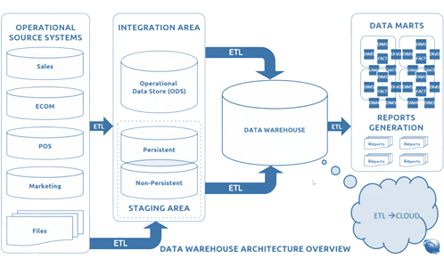
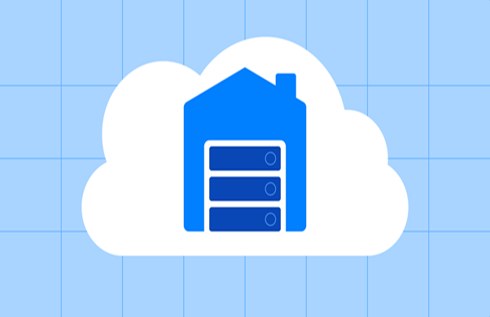
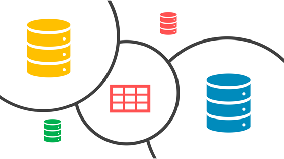
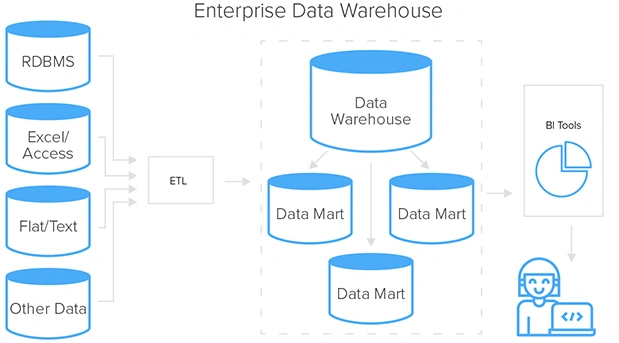
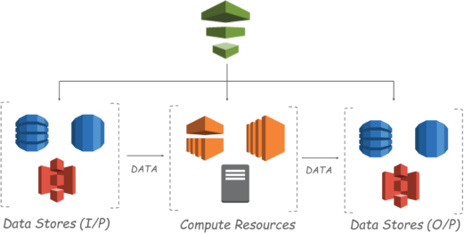
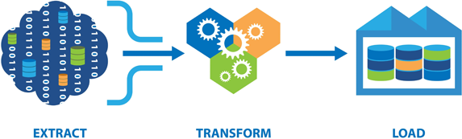
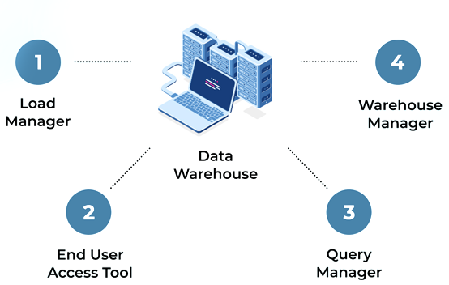
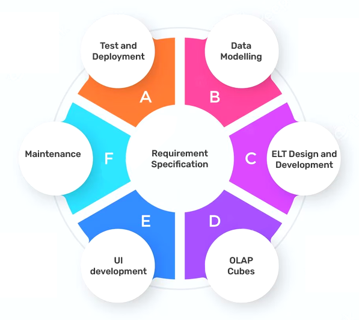
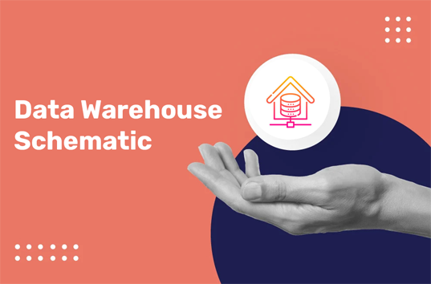
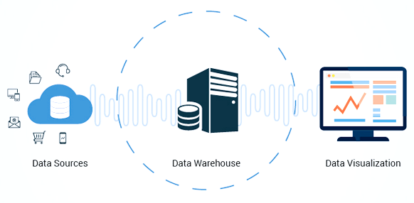

Data Warehouse Insights


What is a Data Warehouse?
Data warehouse is known to be the most complete source which mixes all types of information through numerous places, meant to back up supervisory policy making procedures. When we talk about BI, this cultured technique mixes knowledge and mechanisms deliberately to convert raw data to appreciate occupational intuitions. In the realism of calculation, its purposes are known to be strong tools for data investigation and writing. It helps as a dominant and essential feature of all the firm’s intelligence structures.
Understand the Pros of a Data Warehouse
The Main Base of Contemporary Companies
A company's success is directly proportional to the quality of its people as well as the information, expertise, and capabilities that those people possess. In the frenetic and always-shifting world of business that we live in today, DWS makes important decisions.
Knowing the Influence of Data Warehouse
Enhancing strategic decision-making via the use of accurate and comprehensive information. The seamless integration of business information is crucial to enhance market segmentation.
Untying the Needlepoint of Data Quality
Organizations possess the ability to confidently traverse the expansive terrain of data and extract significant insights to propel their achievements.
Ground-Breaking Development and ROI
Circumnavigating the trail to a large increase of firms. Changing the worth having firm ROI and profits.
Managing your Time more Efficiently
Quick type of entry to significant data through numerous places and alert-making decisions having less data rummaging.
Transforming Function as well as Adaptableness
Enhancing data recovery and investigation speed. Shortening report generating using data warehouses that were designed specifically for that reason.
Uniting varied Data Causes
The achievement of effortless integration and normalization of data derived from many sources. The eradication of data redundancy to provide a singular and authoritative source of information.
Data Warehouse Construction
The development of a data warehouse system requires a comprehensive understanding of three discrete architectural levels, each intricately constructed to fulfill unique responsibilities and capabilities.

ODS
Envisage the ODS like a joint amid the current as well as forthcoming things, a port where there is time being port among data, coming up to be altered and accompanied in the large area of DW. This intermediate phase safeguards which data is at its best type, exactly ready for its subsequent excursion of examination and profounder investigation.
Addition Part
The inclusion of tool data is an essential component of any tool or equipment. It gives enhancements like additional features or components that augment the usefulness and adaptability of the tool. These supplementary components may include a range of attachments, extensions, or extras that are purposefully crafted to enhance the primary instrument and provide supplementary functionalities.
The Staging Area
The Staging Area takes center stage as a meticulous guardian within the operational system. It vigilantly safeguards and nurtures data sourced from OLTP systems. Through rigorous transformation and cleansing processes, this repository ensures that the data is refined and ready for seamless loading into data warehouses, data marts, and Operational Data Stores. The Staging Area maintains data integrity and is the bedrock of the data staging process.
Data Warehouse and Data Sales
In the extensive DW, Data Markets deliver fraught understandings of exact commercial places or subdivisions. Custom-made to dissimilar players, like financial, selling, or advertising, Data Marts rationalize the making of decisions by providing prompt access to applicable info.
The Evolution of Data Warehouses
| Aspect | Description |
|---|---|
| Handling Huge Volumes of Data | Developing data warehouse influences cloud computing in the professional procedure of data capacities. |
| Treatment Varied Data Kinds | Supple projects and NoSQL folders put up varied data arrangements for unified incorporation. |
| Real Analysis | The use of stream processing and databases with in-memory storage facilitates the rapid extraction of valuable insights from incoming data. |
| Safeguarding Data Ascendency and Safety | Strong outlines protection data truthfulness and confidentiality, safeguarding domination and safekeeping. |
| Addition with Progressive Analysis | The integration of data warehouse with algorithms for learning and artificial intelligence facilitates the exploration of more profound analytical insights. |
| Cross and Cloud-type Explanations | Companies take cross or infrastructure of cloud through flexibility as well as value for money of the solution. |
| Version to manage Big Data | The evolution of data warehouse to manage big data involves tackling issues such as massive quantities, various kinds, real-time analysis, management, informatics integration, and hybrid or cloud-based approaches. |
What Is CDW (Cloud Data Warehouse)?
Acceptance of the cloud data warehouse gives a new age, as many firms stage to an area of provides the opportunity to try out new concepts, roll out new products, and join new markets without the weight of initial infrastructure investments. In the era of unparalleled digitalization, the continuous influx of data presents a multitude of obstacles and possibilities.
The cloud data warehouse has emerged as a revolutionary solution, providing a managed service that efficiently collects, saves, retrieves, and analyzes large volumes of data. The ease of accessing data stored on the cloud enables enterprises to tap into previously unexplored opportunities and flourish in a society that heavily relies on data analysis. This revolutionary solution offers several advantages, enabling firms to effectively navigate and thrive in the dynamic and always-changing information ecosystem.

We Deliver Data Warehouse Insights Services Across
Define Up-To-Date Data Warehouse
The advent of the digital era has brought about a significant transformation in the field of data management, with the contemporary data warehouse playing a pivotal role in this revolution. The cloud-based platform effortlessly consolidates data, irrespective of its magnitude or structure. This facilitates the attainment of complete perspectives on corporate data using analysis widgets and operational visualizations. Equipped with important big data insights, firms can make agile choices, therefore obtaining a competitive advantage in the current dynamic business environment.
Making Data Warehouse

While discussing Data Warehouse's Drive, the firm investigates the vital details for creating a data warehouse like a substratum for effectual handling of data and data-related judgments. Understandings are gotten to the planned significance of such a vital section in a data network.
A meticulously designed dimensional model is created, specifically customized to align with the distinct requirements and goals of the company. The meticulous design guarantees a resilient framework for efficiently evaluating and understanding data.
The company discovers a collection of leading-edge tools and knowledge obtainable for DW. Considerate assessment principles to a documentation of correct explanations which allows unified data dispensation, forward-thinking analyses, and good presentation.
It is like varied data sources are increased via scrutiny and understanding. This covers the method for a flat and fruitful mixing procedure.
The firms acquired knowledge and expertise in the meticulous process of data mappings and alteration. It involves the movement of data from its source to the designated destination location inside the data warehouse. Maintaining a continuous and comprehensible flow of knowledge is of utmost importance to provide dependable insights.
Crafting Text with Accuracy and Coherence The team demonstrates expertise in the development of sturdy and painstakingly constructed code, which facilitates precise data representation and efficient data management. The use of best practices in coding is necessary to optimize the full potential of the data warehouse.
The code undergoes a comprehensive and meticulous testing process. The need to do thorough testing is widely acknowledged to sustain the integrity and dependability of the data warehouse. The testing procedure ensures the precision of the data and the effectiveness of the system.
The company encounters the excitement of implementing the data warehouse. The smooth implementation facilitates the ability of stakeholders to make informed choices based on facts with a sense of assurance.
Data Warehouses With OLTP Methods
| Aspect | Description | OLTP Systems |
|---|---|---|
| Purpose | Designed for BI activities | Designed for high-volume, actual data processing |
| Database Schema | Not normalized and often contains redundant data | Optimized for small data transactions |
| Data Additions | Data added in large batches from operational databases | Real-time or close to real-time data updates |
| Data Duplication | Might contain redundant data for analytical processing | Minimizes data duplication |
| Schema Design | Often used star or snowflake diagram designs | Often designed in third normal form |
| Fact and Dimension table | Typically contains a small number of fact tables surrounded by dimension tables | Typically has no fact or dimension tables |
| Performance | Optimized for processing complex queries and analysis | Efficient for complex transactions quickly |
| Suitable Database | Can be used for analytical processing and data warehousing | Postgres can be used, but better suited for OLTP |
How Does A Data Warehouse Work?

The transformational power of data warehouse empowers organizations by seamlessly converting diverse data into analytical schemas, complemented by the use of metadata to ensure efficient querying. The semantic layer acts as a translator, simplifying complex data structures and aiding in-depth analysis. By integrating vast and disparate data sources, data warehouse becomes a valuable tool for mining actionable insights that drive business growth.
Its well-designed architecture orchestrates the entire process of data processing, analysis, and presentation, streamlining workflows and enhancing decision-making. Indispensable for customer analysis, identifying market trends, and making strategic decisions, data warehouse shines brightly in the competitive landscape. Organizations are encouraged to embrace this powerful technology to fuel dynamic growth and stay ahead in the ever-evolving business environment.
Data Warehouse vs. Data Lake
| Aspect | Data Warehouse | Data Lake |
|---|---|---|
| Data Types | Specializes in analyzing relational data from diverse sources, including transactional systems and operational databases. | Embraces various data types, both structured and unstructured, such as videos, text messages, and social media postings. |
| Data Curation | Curates are highly organized, representing the company’s gold standard or definitive version of the information. | Includes a blend of rare, uncurbed, as well as ulcerated data alongside handled data. |
| Data Volume | Handles a substantial number of data, fluctuating through hundreds of gigabytes to petabytes. | Stores and processes massive volumes of data, comparable to data warehouses or even more. |
| Application Focus | Commonly used for BI analysis and graphical visualizations, ideal for generating actionable insights. | Frequently employed for machine learning, data discovery, big data analysis, and profiling to extract valuable patterns. |
| Data Sources | The primary method used is the sourcing of data from MySQL databases and additional sources that are organized in nature. | Consumes data through diverse sources, encompassing both organized and formless data formats. |
| Data Processing | Optimized for processing complex examinations and also facilitating deep analysis. | Flexible processes various data types and adapts to different user examples and investigative requirements. |
| Data Preparation | Pre-aggregates transforms, and systematises data for efficient analytics. | Holds both raw data waiting for processing and shaping data for immediate analysis. |
| Schema | Follows a structured representation enterprise to ensure consistency in data analytics | Adopts a schema-on-read approach, enabling schema application during data analysis as per specific requirements. |
| Data Flexibility | Offers structured data, allowing consistent standardized analysis. | Provides the flexibility to take care of diverse and evolving data formats, accommodating dynamic data needs. |
How Does AWS Create A Data Warehouse?
Experience the seamless deployment of Amazon Redshift, as it revolutionizes data analysis and best-make planning. The process begins when you create a Redshift cluster, easily configured and optimized to meet specific requirements. Custom settings ensure lightning-fast data processing and stringent security measures, safeguarding valuable information. Unveil the potential of Redshift with sample data exploration, gaining valuable insights into its analytical prowess.
Witness rapid and insightful analysis in action, thanks to Redshift’s high-performance storage and optimized query execution. With effortless integration of SQL Workbench, your team can transform raw data into valuable business intelligence, empowering data-driven decisions at every level. Discover the unparalleled power of Amazon Redshift they will take your analysis to new heights.

ETL-Based Data Warehouse

In the ever-evolving landscape of DW, the ETL procedure assumes a foundational role. The methodology employed by a firm initiates the extraction of data through several sources. This data then undergoes meticulous transformation to ensure compatibility with it. Once primed, the enriched data seamlessly loads to a warehouse, empowering comprehensive exploration and reports.
Through fine-tuning ETL jobs, the organization effectively mitigates data lag, unlocking real-time insights. This infusion of actionable intelligence fuels the organization, driving informed decision-making and paving the way for remarkable growth. Embrace the power of our Data Warehouse Consulting and witness the transformation of your data into a catalyst for success.
Difference between Data Warehouse and Data Mart
| Aspect | Data Warehouse | Data Mart |
|---|---|---|
| System Type | Centralized method | Decentralized method |
| Normalization | Light denormalization | High denormalization |
| Model Type | Toppest below model | Lowest model |
| Implementation Complexity | Problematic to create | Simple to create |
| Schema Type | Truths gathering schema | Stars and Snowflake kind of schema |
| Flexibility | Flexible | Less flexible |
| Life Cycle | Longest time | Smaller life |
| Data phase | Data is in detailed type | They are contained in small size |
| Size | Huge in size | Size is small |
| Data Storage Size | 100 GB to 1 TB+ | Lesser like 100 GB |
| Implementation Time | Implementation from months can go up to 365 days | Deployment takes only a few months |
| Operative Data Presence | Complete working data | It is not active |
| Data Processing Time | Longer dispensation time because of huge data | Lesser handling time due to management of a smaller number of data |
| Enterprise Process Complexity | The complex design procedure of outlines and opinions | The informal project development of representations and understandings |
Data Warehouse Features
Indispensable assets for companies:
Subject-Oriented
Tailored to specific subjects, it offers focused insights rather than an overall view of processes. For instance, a sales-centric gives valuable info such as identifying the best client of the previous year or predicting potential top patrons in the future.
Unified
Data warehouse involves the seamless integration of data from diverse sources. This ensures uniform storage of data in a reliable set-up, allowing operative and reliable data examination.
Unchangeable
Here once information is entered, it remains unaltered. The data is done when preserving preceding records alongside existing data. This empowers businesses to analyze historical events and trends and accuracy.
Temporal
It is crucial to carefully record every step of any process or event since doing so may have several advantages. Detail-oriented documentation is essential in many areas, including study, business, and professional life that changes over time.
Kinds of Data Warehouse (DWH)
Enterprises Data Warehouse
The epitome of centralization, the EDW empowers diverse subdivisions with unified processing of decision supports. Through comprehensive organization and representation of data, such warehouse streamlines processes, providing the flexibility to categorize data through subject as well as offering tailored access to each department as needed.
Operational Data Store (ODS)
Helping as the dynamic solution, the ODS steps in when reporting demands surpass data warehouse or OLTP capabilities. Facilitating data refreshes, the ODS proves invaluable for routine activities, such as packing employees' records and ensuring up-to-date info.
Data Mart
The Data Mart stands dedicated to specific business lines, whether everything related to finances, assets, revenue, or buying, as well as inventories. Embracing direct data collection from sources, fosters targeted insights for enhanced making choices, doing an essential asset for achieving business objectives.
Components of Data Warehouse

The Loading Manager
In orchestrating Data Integration, the Load Manager takes center stage as a vital front component. With utmost precision, it orchestrates the extraction and loading of data into the warehouse, ensuring a seamless integration process. Its expertise in data transformations guarantees that the data is meticulously prepared for smooth integration into the repository.
The Warehouse Manager
At the core of data management lies the Warehouse Manager, a diligent overseer of all warehouse operations. Thorough analysis is its forte, ensuring data consistency and integrity. This critical component handles essential tasks such as creating indexes, views, denormalization, data aggregation, and executing transformations. Moreover, it safeguards data through secure archival practices.
The Query Manager
Empowering Information Retrieval Serving as the backend component, the Query Manager acts as the master scheduler, efficiently managing user query interactions. Skilfully coordinating and executing queries, it accesses the appropriate tables to swiftly retrieve desired information, empowering users with insightful data retrieval.
The End-User Access Tools
The End-User Access Tools form the gateway for users to interact seamlessly with warehouse data. Organized into five groups, including Data Reporting, Query Tools, Application Development Tools, EIS Tools, OLAP Tools, and Data Mining Tools, each category offers diverse functionalities. Users gain the power to access, analyze, and manipulate warehouse data effectively, unlocking the full potential of data-driven decision-making.
Why There Need For Data Warehouse?
Decision Creators
Through those making decisions relying heavily on massive data bulks to create conversant choices, a data warehouse becomes an indispensable ally. It empowers them with comprehensive and consolidated insights, the provision of a solid groundwork for the process to arrive at tactical choices.
Complex Data Users
Retrieval Individuals seeking customized, intricate procedures to make entries and examine data through a lot of data sources to see data warehousing important. They rationalize data repossession and examination, redeemable valuable period, and determination.
Technology-Savvy Users
Data warehouse also caters to users in search of simple technology for accessing data. With user-friendly interfaces and optimized data organization, even less tech-savvy individuals can effortlessly navigate and leverage valuable information.
Systematic Makers
For those who prefer a systematic method to make judgments, a data warehouse provides data that is used very professionally and data that is systematic. This enables them to derive meaningful insights and conclusions, paving the way for better decisions.
Analysts Tracking Customer Activity
Individuals needing to analyze data from different sources, such as tracking valuable customer activity, benefit from data warehouse centralized location. The technology facilitates the easy incorporation of data via varied arrangements, thus increasing the competence of breakdown.
Separation of Analytical and Transaction Data
Analysts wishing to check and create user movement journals with no trouble with the firm’s procedures could make use of this to detach methodical and transaction information. This safeguards data analysis happening self-sufficiently through essential business procedures.
Dealing Unsuitable Data Source
NoSQL databases are not compatible with BI tools so data warehouse offers a transformative solution. It acts as an intermediary, transforming and storing data for easy BI tool integration.
Improving Query Performance
Businesses dealing with extensive transaction data that slows down standard queries can optimize performance using data warehousing. Summary tables aggregating data streamline queries, leading to faster and more efficient results.
Steps To Implement Data Warehouse
Defining Project Scope
In the initial phase, the project team diligently defines the scope of the data warehouse initiative. Identifying objectives, deliverables, and boundaries ensures a focused and successful implementation.
Determining Business Needs
Understanding specific business needs is crucial. Collaborating with stakeholders, the team gathers requirements and aligns the data warehouse goals with the organization's strategic objectives.
Defining Operational Datastore Requirements
The team identifies needs for the operational datastore, an intermediate storage for data when it comes to the contact of a data warehouse. This involves determining data sources, formats, and integration processes.
Acquiring or Developing Extraction Tools
To ensure seamless data integration to DWS, the team chooses or develops the appropriate extraction tools, enabling smooth data extraction through numerous places.
Significant Data Warehouse Data Necessities
The team meticulously specifies data needs for DW, comprising data rudiments, kinds, relations, and quality standards, setting the groundwork for data exactness and trustworthiness.
Documenting Missing Data
Identifying any missing or incomplete data, teams diligently document steps to fill the gaps, safeguarding data wholeness and correctness inside the data warehouse.
Mapping Functioning Data Store
The team maps the flow of data through the establishment of a functional data store inside the data warehouse involves the delineation of processes that govern the transformation and loading of data into such warehouse.
Emerging Data Warehouse Designing
Having an emphasis on efficiency, the team makes the data warehouse database schematic, together with charts, indexes, and tables, to optimally store and retrieve data for analytical purposes.
Extracting Data from the Operational Data Store
The team implements the extraction process to retrieve data from the operational data store, transforming it into an appropriate setup for a data warehouse.
Filling Data Warehouse
It can keep a keen eye on data honor and uniformity, where the team loads the converted data to a data warehouse, safeguarding the data that is seamlessly integrated and prepared for breakdown.
Maintaining
Regular monitoring and maintenance are serious. The group keeps a watchful eye on DW, confirming its function, data superiority, and availability. It has data backups, security measures, and function tuning.
Advantages and Disadvantages
| Advantages | Disadvantages |
|---|---|
| 1. Enhanced End-User entry to many Data | 1. Time-Consuming Data Removal, clean, and can take many loads |
| 2. Increased Data Consistency | 2. Compatibility Issues with Existing Systems |
| 3. Improved Productivity and Reduced Computing Costs | 3. End User Training Challenges and Underutilization |
| 4. Centralized Data Integration | 4. Security Concerns, especially if web-accessible |
| 5. Infrastructure Support for Data Changes and Replication |
Future Of Data Warehouse
The Evolving Data Warehouse Professional
Beyond technical expertise, data warehouse professionals now embody domain knowledge. They serve as valuable bridges between functional insights and technical implementations for BI as well as Reporting. This pivotal role empowers organizations to unlock the true potential of their data systems, driving data-driven conclusions.
The Resilient Architectural Foundation
Contrary to misconceptions, data warehouse remains resilient amidst the emergence of Big Data. The latest versions of Relational Database Engines are incorporating Big Data fundamentals, reinforcing the continued significance of data warehouse. Moreover, data warehouse is more about adaptable architectures than specific technologies, ensuring seamless transitions between technology stacks.
Opportunities and Challenges
The scope for data warehouse is vast, presenting immense opportunities for businesses. However, challenges arise with regulatory constraints limiting data integration, especially with unstructured data. The ever-expanding size of databases also poses complexities, requiring innovative solutions to manage large-scale data efficiently. Additionally, the handling of multimedia data presents a captivating research subject.
Embracing the Future
Data warehouse remains a strategic cornerstone for organizations seeking to leverage the power of data. By adopting a new outlook, businesses can navigate through challenges and embrace data-driven transformations successfully. As the data landscape evolves, data warehouse stands resilient, empowering organizations with valuable insights and shaping a brighter data-driven future.
Data Warehouse Tools
Oracle
Teradata
Google Big Query
Microfocus Vertica
Snowflake
Microsoft Azure
Postgre SQL
Amazon Redshift
Amazon Dynamodb
RDS
Functions of Data Warehouse Tools and Utilities
| Data Warehouse Purpose | Description |
|---|---|
| Data Extraction | The initial step in this point is to gather data through diverse sources to create a comprehensive as well as unified source. |
| Data Cleaning | Identifying and rectifying mistakes in the data, eliminating inconsistencies, duplications, as well as inaccuracies to ensure high data excellence. |
| Data Transformation | Adapting a change of data via legacy to the warehouse's standardized format, ensuring compatibility and consistency for seamless integration and exploration. |
| Data Loading | When it comes to any procedure that requires organizing and compressing of data a lot of information, sorting and summarizing are two very necessary phases. |
| Refreshing | Regularly informing it via bases to the warehouse, ensuring the data warehouse remains up-to-date and users can access the quite recent and relevant info. |
Data Warehouse Versus DBMS
| Aspect | (DBMS) | DWS |
|---|---|---|
| Purpose and Focus | Application-oriented, handles transaction data | Subject-oriented, facilitates data checking |
| Data Collection | Specific applications, centralized, current data | Manifold varied sources, past data |
| Data Processing | (OLTP) | (OLAP) |
| Data Model | Entity-Relationship prototype | Tabular and multidimensional data prototypes |
| Goal | Ensures ACID properties for data honesty | Enhances data excellence and withdrawal consequences |
| Usage | Recording and managing data for transactions | Analyzing data and deriving valuable insights |
| Time Perspective | Focused on current, real-time data | Involves historical and aggregated data |
| Data Structure | Normalized data structure | Denormalized data structure |
| Query Complexity | Simple inquiries | Complex analytical queries |
| Decision Support | Makes decisions easy and simple | Enables best decisions |
Data Warehouse Procedure Uses?
Its essential purposes are:
Business Intelligence
Data warehouses serve as a foundation for business intelligence, enabling organizations to access comprehensive and timely data for strategic decision-making.
Data Analysis
Data warehouses facilitate in-depth data analysis, empowering businesses to uncover trends, patterns, and correlations for a better understanding of market dynamics and customer behavior.
Reporting
Data warehouses support efficient reporting processes, providing users with customized and real-time reports for monitoring key performance indicators and business metrics.
Decision Sustenance
By contributing to having one source of past and present data, with this every team is secured and they get organized data in a very accurate manner.
Trend Forecasting
It gives trend forecasting a captivating discipline that entails the examination of present and historical patterns to anticipate forthcoming changes within diverse sectors. The scope of this phenomenon extends beyond mere trend forecasting since it spans a diverse array of domains including technology, design, lifestyle, and consumer behavior.
Customer Choices
This phenomenon not only confers advantages to companies via the enhancement of their return on investment. But, additionally confers benefits to consumers by guaranteeing the reception of messages and material that are relevant and valuable to their needs.
Phases of making a Data Warehouse
| Phase | Data Warehouse Development | Description |
|---|---|---|
| 1 | Data needs gathering | This phase is when the team takes and checks firm requirements for storage volumes and information. This step involves collaboration with stakeholders to certify DW meets the company’s precise requirements. |
| 2 | Data Modeling | Here there are designing processes taking place at the data warehouse schema, example tables, relationships, and attributes. Data modeling guarantees that data is organized in a structured and efficient manner for analytical determinations. |
| 3 | ETL enlargement | The development of ETL (Extract, Transform, and Load) encompasses the creation and application of procedures that ease the extraction of data through many sources. Subsequent transformation to the format appropriate for analysis, and ultimately loading it into the designated data warehouse. The inclusion of this particular stage holds significant importance in the procedure of integrating and maintaining consistency within the information. |
| 4 | Testing | To ascertain the correctness and dependability of DW, comprehensive testing procedures are implemented. The aforementioned activities contain data validation, performance testing, and quality checks, that serve to ascertain the efficacy of the warehouse in facilitating analytical endeavors. |
| 5 | Data warehouse placement | When there is a completion of this development with testing phases, the data warehouse is deployed for operational use. This entails facilitating access to the warehouse for consumers and interested parties to do data analysis and generate reports. |
| 6 | Data collection | Data collection includes classifying and collecting pertinent data via many sources that need to be there in the data warehouse. This phase confirms only vital and beneficial data is combined for breakdown. |
| 7 | Data cleansing | Data cleansing, also known as data cleaning or data scrubbing, refers to the systematic procedure of detecting and correcting inaccuracies, discrepancies, and duplications within a dataset. This process boosts the quality of the data and promotes the precision of the analytical outcomes. |
| 8 | Data transformation | This comprises changing data through its main set-up through the data warehouse. This step safeguards data matching and constancy for unified incorporation. |
| 9 | Data loading | This can be the ultimate phase in the procedure as it comes with settling the data warehouse to the analysis and final data. |
Instances of Data Warehouse
The retail firm shop analyses sales, patron, and advertisement information together through several channels, which are later consolidated into a centralized database. Analysts use this tool to get essential knowledge and formulate conclusions depending on the data.
Amazon Redshift
Netflix
Airbnb
IBM
Google Big query
Is SQL A Data Warehouse?
No! SQL (Structured Query Language) itself is not DW (Data Warehouse).
History of Data Warehouse
| Year | Milestone | Significance |
|---|---|---|
| 1960 | Dawn of Magnitudes and Evidences | Introduction of an organized method to data analytics |
| 1970 | Magnitudes Data Marts for Retail Selling | Shift towards domain-specific data sources |
| 1983 | Tera Corporation's Specialized Database Organization System | Purpose-built system to provide a robust and efficient platform |
| The late 1980s | Birth of Business Data Warehouse | Practical App for Data Warehouse |
| - | Inmon Bill: Pioneering the Data Warehouse Theory | Foundation for Communal Info Workshop |
Making Steps of Data Warehouse
Data Warehouse and Data Analytics
| Aspect | Data Warehouse | Data Analytics |
|---|---|---|
| Definition | Consolidates the firm’s data into a common folder. | It includes the information obtained to conclude. |
| Main Focus | Emphases on procedure of gathering and starting data for storage. | Highlights inspecting and interpreting data to cutting discernments. |
| Purpose | Delivers a groundwork for data accumulation and transferring it | Gives ROI and accurate info |
| Data Storage | This means of storing organized and semi-structured data. | Usage of Several techniques such as machine learning, mining, and quantitative evaluation are employed. |
| Relationship | This step is before any other step which happens in DW | It is a later part after data warehouse, that re-applied for several insights |
Data Warehouse Utilizations
- Addition in data warehouses can offer a lot of benefits to many firms.
- Flawlessly directory statistics via manifold financial records, easing efficient statistics recovery and scrutiny.
- Get simple entry to patron’s chronological data, permitting a more inside knowing of its activities as well as inclinations.
- Enhance user communications from enhanced IVR methods, also checking client knowledge.
- Influence data-driven understandings to alter alphanumeric infrastructures, getting to larger modifications and engagement with a specific focus
Ideas for Data Warehouse
| Ideas | Description |
|---|---|
| Data Warehouse | Vital source for old as well as present data coming via many places. |
| ETL | This is the idea to get and change the loading of data towards the direction of the warehouse. |
| Data Mart | Designed to cater to the special requirements of a particular organization. |
| Dimension Computing | Create methods for well-organized data recovery. |
| OLAP | It helps in recovering difficult data studies. |
| Data Granular | The degree of specificity in the information recorded. |
| Data Clean | Checking and modifying data mistakes. |
| Data Supremacy | Rules for data organization and safety. |
| Data Mining | Discovering patterns and insights from data. |
| BI | Examines the many tools available for data processing and display. |
Data Warehouse with Business Intelligence
| Feature | Business Intelligence (BI) | Data Warehouse (DW) |
|---|---|---|
| Meaning | Requests and know-how to fold, contact, and study data | A source where a company can check the data |
| Determination | It helps make final calls and important plans via offering acumens | It helps to store and handle greater data of organized and historical info |
| Data Source | Excerpts and analyzed figures via sources mainly from folders, worksheets, and so on | Mixes data via a lot of sources, converting and combining it for scrutiny |
| Emphasis | Emphases on company reports | Give importance to data storage, society, and recovery, allowing well-organized inquiring |
| User Communication | The system provides report information | This tool is mostly used by analysts and scientist |
| Processing | Normally accomplished in the immediate time | Chiefly applied for old things in folders that are not made for quick transactions. |
| Hardware needs | Needs less storage power | It offers vital storage and dispensation for big data |
| Examples | Tableau, and QlikView | Azure |
Best Practices for Data Warehouse
Strategy for Consistency
To establish a comprehensive data warehouse plan, it is essential to conduct thorough testing procedures to guarantee the consistency, correctness, and integrity of the data. It is essential to give precedence to the implementation of a thorough testing strategy aimed at verifying the quality and reliability of the data.
The Importance of Integration
To establish a proficient data warehouse, it is essential to prioritize the smooth integration of disparate data sources, the establishment of well-defined data structures, and the implementation of timestamping mechanisms to facilitate data versioning. This methodology guarantees the consistency of data and simplifies the process of doing historical analysis.
Use Correct Tools
Select the most suitable tools that fit your data warehouse needs. Adhere to a well-defined lifecycle approach to optimize the efficiency of development, testing, and deployment processes, while maintaining adherence to established best practices for the whole of the project.
Resolve Conflicts
Data conflicts are an inherent occurrence that cannot be avoided in the context of data warehousing. It is advisable to anticipate and proactively tackle these issues, while also seeking to gain valuable insights from any encountered difficulties. The process of improving the data warehouse process is dependent on the implementation of continuous improvement strategies.
Enhance the Efficiency
To minimize time consumption, it is essential to effectively oversee the operations of data extraction, cleaning, and loading. Utilize automation and optimized processes to enhance the efficiency of these jobs and guarantee the accessibility of data for analytical purposes.
Engage Stakeholders for Implementation
The involvement of several stakeholders, including business people, is crucial for the successful execution of the data warehouse deployment process. By taking into account various viewpoints, one may customize the data warehouse to effectively address the distinct requirements of end users.
Prepare End-User Training
The implementation of a comprehensive training strategy for end users is of utmost importance to optimize the advantages derived from the use of a data warehouse. The objective is to provide users with the necessary knowledge and abilities to proficiently explore the data warehouse, so transforming it into a useful tool for informed decision-making.
What Is An Enterprise Data Warehouse (EDW)?
An enterprise data warehouse (EDW) purposes and works as the centralized source, combining data that are gathered from many other areas so that they can BI and knowledgeable managers. Its main assistances comprise of unified data addition, providing a combined access point for broadcasting and scrutiny, guaranteeing data that comes with a massive data bulk, employing power retreat rules, and offering an important manner for upcoming development. Enterprise data warehouses (EDWs) serve as a valuable resource for enterprises by providing them with practical insights that improve operational productivity and provide a strategic advantage.
Characteristics of Data Warehouses
The Historical Evidence Analyzed
Data warehouses are designed to store historical information, allowing users to analyze patterns and variations over certain time intervals.
Central and Authoritative Repository
Data warehouses serve as a centralized repository for storing and effectively managing large volumes of data originating from several different sources.
Ability to Integrate
Data warehouses serve as repositories that integrate data from several sources, providing a cohesive perspective that enhances extensive examination and informed decision-making.
The Process of Integrating
The procedure of integrating and transforming data guarantees compatibility and consistency among various data types and structures.
Structured Business
Data warehouses are structured based on distinct topics, such as sales, customers, or items, to provide targeted insights that are customized to meet the requirements of businesses.
Safeguard Past data
Once data has been entered into the warehouse, it stays unaltered, establishing a dependable record of past activity to analyze and present information.
Applications of Data Warehouses
| Application Type | Explanation |
|---|---|
| Recording and Analysis | Moreover, producing standards can save you effort and time because it removes the requirement to start from the beginning each time a document must be created. |
| Business Intelligence (BI) | It makes use of DW so that the company can make effective steps. When a decision must be based on theory and when it must be realistic BI is used. |
| Online Analytical Processing | Enables multidimensional examination to discover data from several standpoints. A different set of parameters is represented by each dimension of the data cube. |
| Data Mining | Utilizes complicated code to search through the data warehouse in search of previously unknown patterns, correlations, and breakthroughs. Helps with activities like identifying trends, segmenting customers, and finding anomalies so that choices may be made based on the data. |
| Data Integration as well as ETL | This could range from decluttering and is Vital for DW, |
| Customer Relationship Management (CRM) | Businesses must concentrate on managing their client connections if they are to fulfill the expectations for better customer experiences. |
| Supply Chain Management (SCM) | It enables businesses to respond effectively to shifting market needs and reduces risk. Develops inventory management and resource distribution. |
| Finance Analysis | This software assists with many financial activities, including budgeting, development, and reporting. |
Application in Places of Data Warehouse
| Industry | Data Warehouse Application |
|---|---|
| Banking | - Banks provide a wide range of financial services, including basic checking and savings accounts, investment possibilities, loans, and credit cards, to meet the diverse requirements of individuals. |
| Finance | Enables people to assume agency for their financial welfare. And offers profit expansion |
| Healthcare | Separating the collection of patient data for healthcare demands. Securely manage worker registers and monetary dealings |
| Insurance | The inspection of data tendencies and client movements to develop customized policies. |
| Services | Customer summarising and trends and fluctuations in the income generated by a business or organization |
| Transportation | Keeping and maintaining inside crew information, Monetary record storing for pricing policies. |
Data Mining Practices
| Procedure | Explanation |
|---|---|
| Association | They do statistical analysis on the dataset and provide rules with high levels of certainty |
| Organization | Developing classification models to make inferences about data that lacks a label. |
| Forecast | Regression problems rely on the ability to predict constant values from historical data. |
| Gathering | Identifying similarities in data through evaluating data items without class labels and grouping them into clusters based on affinity. |
| Regression | This can give continuous data and delve into intricate ideas |
| Artificial Neural Network (ANN) | The transformative impact it has on several sectors and its significant role in defining the trajectory of machine learning is undeniably remarkable. |
| Outlier Discovery | It checks and diverges from the overarching dataset. |
| Inherent Algorithm | It can be used to look out for the problems from roots |
Compare Different Warehousing Capabilities
| Factor | Considerations |
|---|---|
| Warehouse Location | Proximity to suppliers and customers, transportation infrastructure, access to major highways, ports, and airports. |
| Warehouse Size and Layout | Number of loading docks, ceiling height, column spacing, floor capacity, and layout design for well-organized flows. |
| Storage Capacity | Availability of pallet racking, shelving, storage bin options, also capability to grip specialized equipment or hazardous materials. |
| Equipment and Know-how | Automation and robotics availability, inventory management systems, and tracking technologies for efficient operations. |
| Staffing and Labor Costs | Number of employees required, their skill level, cost of hiring, and preparation staff for effective warehouse operations. |
| Security Measures | Access control, surveillance structures, and fire prevention measures to protect inventory and equipment through theft or damage. |
Difference between Data Lake and ETL
| Concept | Data Lake | ETL (Extract, Transform, Load) |
|---|---|---|
| Definition | A centralized repository for storing vast amounts of raw, unstructured, and semi-structured data in its native format. | A process of extracting data from different sources, transforming it into a usable format, and loading it into a structured database or data warehouse. |
| Purpose | Provides a single source of truth for all data, used for various purposes like analytics, data science, and ML. | Integrates data from multiple sources into a single, consistent, and structured format for easy querying and analysis in data warehouse and BI systems. |
| Data Structure | Stores raw, unstructured, and semi-structured data without a predefined schema. | Transforms data into a structured format with a defined schema. |
| Data Sources | Receives data from various sources like social media, sensors, logs, and databases. | Extracts data from diverse sources, such as databases, applications, and files. |
| Transformation | Minimal to no transformation of data; data remains in its native format. | Data undergoes significant transformation to ensure consistency and quality in the structured format. |
| Query and Analysis | Data lakes are suitable for exploratory analysis and data discovery due to raw data availability. | Structured data resulting from ETL processes allows for efficient querying, reporting, and analysis. |
| Application | Ideal for big data scenarios, data exploration, and situations where the data structure is uncertain. | Critical for data warehouse, business intelligence, and other data-driven applications requiring structured, high-quality data. |
| Usage Flexibility | Offers flexibility in accommodating various data types without predefined schemas. | Provides structured, well-organized data for consistent analysis, reporting, and decision-making. |
| Schema | Schema-on-read approach, where the data structure is interpreted during data analysis. | Schema-on-write approach, where data is structured during the ETL process and applied uniformly across the data, ensuring consistency for analysis and reporting. |
| Data Presentation | Data lakes retain the original data format, allowing users to interpret and transform data during analysis. | Data is presented in a structured format, adhering to a predefined schema, making it easy to understand and analyze. |
| Use Case Example | Storing massive amounts of sensor data from IoT devices without initial data modeling. | Integrating and consolidating customer data from CRM systems, website logs, and sales databases to gain a 360-degree view of customer interactions and behaviors. |
DWB – Automation Tool
The Data Warehouse Builder (DWB) is a software application that has been specifically developed to aid organizations in the systematic organization and administration of their data. It is created with a user-centric approach, ensuring ease of use and accessibility for users. The data modeler, a notable characteristic, facilitates the process of generating a design for data storage. Individuals have the option to start the process from the beginning or use pre-existing data to construct this plan, resembling the act of creating a visual representation of their data environment.
Furthermore, the use of Data Workbench (DWB) enables the incorporation of personalized data designs, hence enhancing the efficiency of subsequent procedures. By using DWB's functionalities, organizations can effectively oversee their data, utilizing it to conduct more comprehensive research and make well-informed decisions. This technology might be likened to the presence of an intelligent assistant that effectively manages and executes data activities.
Data Warehouse Life Cycle

Models of Data Warehouses
The Inmon Approach, also known as the Enterprise Data Warehouse, involves the establishment of a centralized repository that houses all data. This approach aims to maintain consistency and accuracy throughout the data storage and management process. Although longer production schedules are required, implementing a single source of truth inside the company has several benefits.
The Kimball Approach
The approach used involves the utilization of agile and iterative methodologies to construct autonomous data marts that cater to distinct business requirements. While it may result in data redundancy, this approach provides expedited creation and distribution capabilities.
Inmon and Kimball Methodologies
Strikes a balance between authority and diversity. The integration of an Enterprise Data Warehouse with data marts allows for more flexibility in data management while ensuring the maintenance of data uniformity. The successful execution of the task requires meticulous preparation and effective coordination.
Real-World Applications Of Data Warehouse
| Subdivision | Firm | Data Warehouse Practise |
|---|---|---|
| Social Media | User behavior, material engagement, and advertising effectiveness are all things that need to be analyzed to provide individualized user interactions and effective targeting of ads. | |
| Insights into public mood, current events, and future trends via the real-time sharing of public ideas, views, and observations | ||
| Knowing how networking trends work the impact of individual characteristics, work tastes, and content engagement | ||
| Banking | Citibank | To stop fraud events from taking place. It continues to revolutionize and familiarise new trends |
| Institutes | Wells Fargo | Checking all the account doings, analyzing the use of credit and debit cards, and classifying possible monetary hazards. |
| Healthcare | Mayo Clinic | It takes care of patient’s records. Saves doctors, surgeons, investigators, and other healthcare specialists data |
| Companies | Kaiser Permanente | It overall improves patient data. It also prioritizes revolution and technology, |
| Trade Businesses | Amazon | It gives the process of monitoring and managing inventory levels, conducting analysis of client tastes, and enhancing product suggestions. |
| Walmart | Check the level of stocks, monitor data of purchases, and so on. |
Risks Associated With Data Warehouse
There is a potential risk of illegal access to private information inside the data warehouse, since hackers and rivals may make deliberate attempts to break its security measures. The use of resilient firewalls and systems for detecting intrusions may effectively mitigate the risks posed by such crimes.
Individuals with illicit goals who have access to privileged information may pose a substantial risk to the integrity and confidentiality of data. To limit this risk, it is essential to implement appropriate access restrictions, conduct user monitoring, and regularly do security evaluations.
The unlawful transmission of data via channels such as email or cloud storage may result in the compromise of sensitive information. Organizations need to adopt and execute data loss prevention methods, as well as provide comprehensive training to staff about optimal data handling procedures.
Data corruption may occur as a result of hardware failures or software defects, hence compromising the quality of the stored information. The implementation of routine data backups and the development of comprehensive recovery strategies are necessary to mitigate the consequences of such occurrences.
The presence of internal disputes within a team has the potential to impede the completion of a project and adversely affect the overall cooperation among team members. The use of proficient communication and conflict resolution tactics is vital to sustain the progress of a project.
Failure to include end-users in the requirements and development process might result in the creation of a data warehouse that lacks congruence with their specific needs and expectations. The active participation and input from users are crucial in ensuring the effective deployment of a data warehouse.
Insufficient backing from top-level executives might result in inadequate financing and resources for data warehouse initiatives, thus resulting in unsatisfactory results.
Specialized competence in developing and executing is necessary for data warehouse initiatives. The lack of expertise in organizing projects might lead to the development of wasteful data models and faulty executions.
Data Warehouse Use Cases
Data Mining for Insights
Data warehouses enable organizations to perform data mining activities, extracting valuable patterns and insights from vast databases. By analyzing historical data, businesses can discover trends, correlations, and hidden relationships, empowering data-driven decision-making.
In-Depth Market Research
Data warehouses facilitate comprehensive market research by analyzing large volumes of data. Organizations can gain a deep understanding of market trends, customer preferences, and competitor behavior to devise effective marketing and business strategies.
Analyzing User Behavior
Leveraging data warehouses, businesses can analyze user behavior across various platforms and applications. This analysis helps in understanding customer interactions, preferences, and needs, leading to enhanced user experiences and personalized services.
Data Integration for better Decision-Making
Data warehouses play a crucial role in integrating data from different source applications. By consolidating data from production, sales, costs, inventory, and external market trends, organizations gain a holistic view of their operations. This integrated data supports informed decision-making at various levels, from operational to strategic.
Enhanced Budgeting and Forecasting
Data warehouses enable organizations to combine budgetary data with actual performance data from different applications. This integration aids in accurate budgeting, forecasting, and financial planning, and ensuring optimal resource allocation and performance evaluation.
Facilitating Regulatory Compliance
Data warehouses assist organizations in meeting regulatory compliance requirements. By centralizing data and ensuring data accuracy, businesses can easily generate reports and fulfill compliance obligations.
Improving Customer Relationship Management
With data warehouses, organizations can store and analyze customer-related data comprehensively. This data-driven approach enhances customer relationship management, allowing businesses to personalize marketing efforts, improve customer service, and increase customer retention.
Optimizing Supply Chain Management
Data warehouses support supply chain optimization by integrating and analyzing data from various stages of the supply chain, such as inventory, logistics, procurement, and demand forecasting. This helps streamline processes, minimize costs, and enhance resource allocation.
Potential Challenges With Data Warehouses
Time, Effort, and Cost
Building and maintaining data warehouses require significant time, effort, and financial investment. From data integration to infrastructure setup, the process can be resource-intensive.
Lack of Cross-Divisional Collaboration
Data warehouses often serve multiple divisions within an organization. However, the lack of collaboration among these divisions can lead to siloed data and hinder the full potential of data utilization.
Technological Complexity
Implementing data warehouses involves dealing with complex technologies, including data modeling, ETL processes, and database management systems. This complexity can pose challenges in system integration and overall data management.
Changing Business Data Requirements
As business needs evolve, data requirements also change. Adapting data warehouses to these evolving demands can be a challenge, requiring continuous updates and improvements.
Understanding Business Requirements
Understanding the intricate nuances of business requirements is essential for a successful data warehouse implementation. Misinterpretation or lack of clarity on business needs can lead to ineffective solutions.
Identifying True Data Sources
The source of data used in a data warehouse should be accurate and reliable. Identifying the true source of data can be challenging, especially when data comes from various systems and databases.
Managing Data Quality Issues
Data quality is critical for reliable business insights. Data warehouses may face data quality issues such as inconsistencies, repetitions, and omissions, necessitating robust data quality management practices.
Vendor Influence
Vendors promoting their proprietary solutions may lead to biased decision-making during the selection and implementation of data warehousing tools. This can result in suboptimal choices for the organization.
Inconsistent Data and Semantic Conflicts
Integrating data from multiple sources can introduce inconsistencies and semantic conflicts. Resolving these challenges requires careful data governance and standardization.
Data Warehouse Jobs Viewpoint
The employment prospects for data warehouse positions are favorable since developments in computer technology have enabled even smaller organizations to harness the potential of big data analytics. The need for proficient data warehouse engineers is on the rise due to the growing reliance of organizations on data-driven decision-making. Data plays a crucial role in the functioning of organizations, providing essential insights and facilitating strategic decision-making.
Data warehouse specialists are integral to the process of conceptualizing, constructing, and sustaining data warehouse systems, therefore guaranteeing the precision and availability of data to conduct effective analyses. The increasing reliance on data as a catalyst for innovation across several sectors has led to the emergence of compelling employment prospects in the field of data warehousing.
Additions with Source Schemes
Data is created via numerous IT methods in the firm. DWaaS comprises influences and data feeds having such source methods, enabling data mining as well as load in the warehouse.
Recordings of Data
Additional processing is necessary to fulfill the requirements of the customer, enhance the functionality of the product, and add value to the end product at all levels.
Administration Services
From the networks to the apps, everything must be taken care of to guarantee the seamless and effective operation of the different devices and systems.
Analytics Competencies
Obtaining value, gaining a grasp of the many assets and resources that a firm owns, as well as locating and taking advantage of market possibilities is what we mean when we talk about value extraction.
Data Warehouse Schematic

The significance of a schematic in data management is crucial as it serves to provide a logical description of the whole database. The provided information encompasses detailed details pertaining to various record kinds, their related data items, and aggregates, along with their respective titles and descriptions. In a similar vein, the establishment of a data warehouse necessitates the implementation of a well-defined schema to effectively arrange and manage its extensive collection of data.
The schema functions as a foundational framework, providing guidance on the organization and retrieval of data, hence promoting efficient operations and enabling the analysis and reporting of data. The inclusion of a well-constructed schema is an essential element in the establishment of an effective data warehouse, enabling organizations to maximize the use of their data to make well-informed decisions.
Comparison of Data Warehouse, Data Mart, Database, and Data Lake
| Aspect | Data Warehouse | Data Mart | Database | Data Lake |
|---|---|---|---|---|
| Description | A depository for all the data | A subsection of a data warehouse used only for some areas | An organization structure for keeping and handling data and info. | A stowing source for formless and fresh data. |
| Determination | Allows for the execution of complicated analytic queries and reports. | Offers battered and basic opinions for some operators. | Organizes, saves, and accesses information related to operations in the most effective manner possible. | Let users discover and operate data |
| Data Source | Mixes data when they get via sources | Removes and improves data that is gotten from DWS | Keeps data from apps and other methods | Comprises replicas of unique data and provisional data. |
| Schema | This is used after data storing | It’s used in specific cases | Describes the structure when the time of gets stores | No schema offers exploration and choice. |
| Demand and Analytics | Allows advanced analytical queries and output. | Tailored and streamlined views for certain individuals. | Effective for operations inquiries and analysis. | Enables the execution of customizable queries and facilitates exploratory exploration of data. |
| Customers | Business analyzing, profit makers. | subdivision-particular users having proper requirements | Includes programs, builders, and consumers. | Data analysts, data specialists, and data experts. |
| Addition of ETL | Data goes to ETL | Use of Extract, Transform, Load (ETL) techniques. | Mixes with apps and other techniques | There is no integration procedure. |
| Data company | Arranged for chronological or statistical reasons. | Made for business explicit | Prepared for well-organized storing and repossession. | The storage system lacks a precise organizational structure and extensive processing. |
| Agility and adaptability | Agrees tractability in data search and study. | Ability to meet departmental needs. | Fast access to information and operational effectiveness. | Open for data examination and research. |
| Use Cases | Setting trends and history analysis | Notifying, assessment, and observations by department. | Transactions interpreting, real-time data administration. | Data collection, study, test. |
Cloud Data Warehouses vs Traditional On-Premise Data Warehouses
| Aspect | Cloud Data Warehouses | Traditional On-Premise Data Warehouses |
|---|---|---|
| Database Designing | Provides many types of data | It functions well with structured data |
| Price | The pay-as-you-go strategy contributes to cost-effectiveness. | Greater application and preservation prices |
| Scalability | Flexible in increasing demands | The system's scalability is constrained as potentially encounters performance challenges. |
| Easy | Provides easy new data | There is no speed and simplicity |
| Data Format | Supports multiple data formats | Best suited for tight integrations of similar data |
| Presentation and Addition | Offers substantial presentation advantages | Might experience encounters in addition |
| Allocation and use of resources | Well-organized uses of data warehouse resources | Resource application might not be enhanced |
Integration of Modern Data Warehouse into Contemporary Data Stack
The method of incorporating the current data warehouse into the present-day data stack is a complex procedure that entails the smooth integration of many components, such as data intake, transformation, and visualization applications. The below criteria delineate the most effective approach to achieve this task:
The first step in the process of integrating a contemporary data warehouse involves the identification of various data sources that need to be synchronized with the warehouse. The sources under consideration may cover a diverse array of infrastructure, including internal systems like Customer Relationship Management (CRM) or Enterprise Resource Planning (ERP), as well as other methods like social media sites or third-party Application Programming Interfaces (APIs).
Choosing the Ideal Data Ingestion Solution After establishing the data sources, the subsequent crucial task is the meticulous selection of a data ingestion tool that can effectively connect to these sources and efficiently extract the necessary data. There are other choices available, including Apache Kafka, each offering distinct benefits based on individual requirements and preferences.
Developing an Effective Data Transformation Pipeline Data obtained from several sources sometimes requires further processing before getting analyzed or reported. Therefore, the development of a meticulously organized data transformation pipeline can be essential. The major purpose of a pipeline is to perform data cleaning, filtering, and alteration processes to convert the data to a standardized format that is consistent with the arrangement of a data warehouse. Efficiently crafting may be achieved by making use of Google Cloud Dataflow.
Optimizing the Process of Data Loading into the Warehouse where data have transformed, the subsequent step involves filling the contemporary data warehouse. This procedure of simplifying may be accomplished with technologies such as Apache Airflow. These solutions provide automated capabilities that minimize the need for personal involvement and improve productivity.
Adopting a Strong Data Visualization Solution to optimize data housed inside the storing, it is essential to carefully select a dependable data tool. This tool will serve as the means to derive meaningful insights from the data. There is a wide range of solutions available in this field, which is considered to be among the best choices. These platforms provide a user-friendly interface that facilitates the investigation and visualization of data.
The leading providers of Cloud Data Warehouse
Amazon Redshift
Amazon Redshift is a solution that operates inside the (AWS) ecosystem. The system demonstrates proficiency in managing organized data, particularly the JSON format. Scalability solutions include the use of manual node upgrades and the incorporation of server features. The platform is under complete management, however proficient AWS architects may be necessary for efficiency.
Snowflake
Snowflake is a highly adaptable cloud-based data warehouse that works across several cloud platforms such as AWS, Google, and Microsoft. The method effectively succeeds in both organized and disorganized data formats, including, XML, Avro, etc. The auto-scalability piece of Snowflake enables the dynamic adjustment of storage and figure properties in response to changing demand, hence facilitating smooth installation and frictionless data exchange.
Azure Synapse
Azure Synapse, an integral component of Microsoft's cloud platform, is an extremely resilient data warehouse that effectively accommodates several types of data, such as data. By using manual scalability choices, enterprises can make adjustments across the board and organically. Azure Synapse is a comprehensively managed platform that necessitates less upkeep and provides economically advantageous pricing options for new enterprises.
Google Big Query
Google BigQuery is integrated into the Google platform. The system efficiently handles all data formats such as XML. The computing system has a distinctive attribute of autonomous storage and computational scalability, which guarantees adaptable and easily manageable operations, making it well-suited for a wide range of workloads.
Data Warehouse Market Indicators
| Market Tendencies | Indicators |
|---|---|
| The growth of the data warehouse market in the Asia Pacific (APAC) region. | The compound annual growth rate (CAGR) is projected to exceed 20% throughout the period from 2020 to 2025 |
| The market share of data warehouse in North America. | It is anticipated that by 2025, the market share of this particular entity will exceed 40% |
| The Expansion of the Unorganized Data Market | (CAGR) will exceed 11% throughout the period from 2018 to 2025. |
| The Prevalence of Unstructured Data Segments | Predictable to hold 70% market share by 2025 |
| The increasing market share of data mining | This particular product or service would have a share of the market exceeding 30% by 2026 |
Size of Data Warehouse Market

The data storage sector is anticipated to have significant expansion, as forecasts indicate an attractive compound annual growth rate (CAGR) above 12% from 2019 to 2025. The Compound yearly Growth Rate (CAGR), representing the average yearly growth rate over a period longer than one year, serves as an illustration of the sector's dynamic potential and prospects. The growing recognition among organizations of the significance of data-driven insights is anticipated to result in a substantial increase in the need for reliable data warehouse solutions, hence driving the market to unprecedented levels.
Frequently Asked Questions (FAQs)
The use of data warehouse is of utmost importance for enterprises due to its ability to provide centralized storage, organization, and analysis of substantial quantities of data.
When choosing a data warehouse provider, it is important to take into account many variables like scalability, data integration capabilities, security measures, price, customer support, and industry reputation.
Aegis provides a range of sophisticated solutions for data warehouse that are customized to meet the individual needs of our clients. Our areas of specialization include the smooth integration of data, the development of scalable architecture, the implementation of strong security measures, and the provision of tailored assistance.
The Aegis team consists of experienced professionals with expertise in many technologies and methods related to data warehouse. They demonstrate a comprehensive understanding of data modeling, ETL operations, analytics, and visualization, which empowers them to provide innovative solutions and contribute to the achievement of your organization.
To what extent is each system customized? In other words, do you have any custom tables, entities, and fields that you believe will be required to be present in both of the systems?
Over the last several years, an increasing number of multi-firms have made public commitments to collaborate only with those suppliers that uphold ethical and environmental requirements.